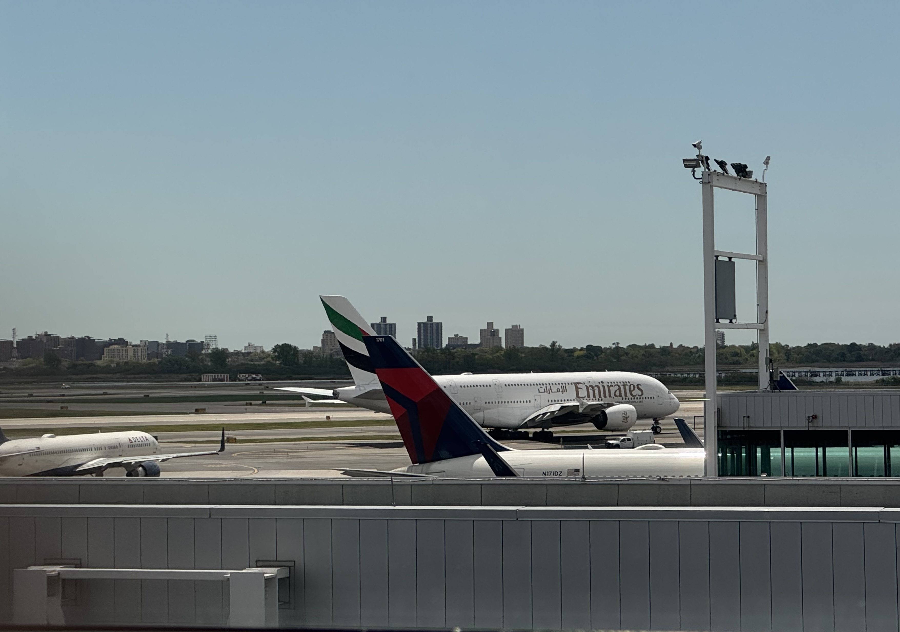

A Geophysicist Walks Into an Airport Lounge

The LIRR strike caused enough traffic on the Southern State Parkway that I missed my morning flight. Six hours in the Delta Sky Club at JFK Terminal 4, Concourse B. As a geophysicist usually does: I counted.
1:20 pm. Peak travel hour. 150 people in a 550-seat flagship lounge. 27% utilization. By 2:10 pm it had climbed to roughly 50%.
Two observations. Fifty minutes apart. Enough to reconstruct the rough economics of a 27,000-square-foot operation and expose a policy miscalibration inside one of the largest airline-credit card partnerships in the United States.
The method was familiar. Build a model from first principles. Collect field observations. Calibrate. Infer what you cannot directly see. It is exactly what we do with seismic data.
The cost structure - rent, labor, food, depreciation - works like a layered Earth model. Most of it is invisible from the surface. With a few constraints and two honest observations, one can invert for the hidden parameters. Daily operating cost: $37,000 to $60,000. At current visitor levels, fully loaded cost per person reaches $15 to $25 - likely at or above what Delta recovers from Amex for each eligible cardholder entry. The lounge, in isolation, loses money. It exists to justify a co-brand credit card contract worth hundreds of millions annually, not to turn a profit on buffet economics.
In February 2025, Delta and American Express introduced annual visit caps: 10 per year for Amex Platinum cardholders, 15 for Delta Reserve. The policy was sold as managing overcrowding. It worked - perhaps too well. A lounge that once had queues out the door now peaks at 50% on a busy Friday afternoon. The optimal range for both economics and experience is probably 60 to 70%. Delta calibrated well but may have one adjustment left to make.
I teach my students to use geophysical observations to inform real decisions about energy, infrastructure, climate, and risk. The harder lesson is that the same habits apply everywhere: measure carefully, build honestly, update when the data disagrees with the model.
Delta's SVP of Customer Engagement and Loyalty - the executive who owns the Sky Clubs and almost certainly shaped the cap policy - is a former Chief Economist and revenue management specialist. His team actively hires data scientists and operations research analysts. If you learn how to use data to analyze the Earth, and pair that with curiosity and broad knowledge about how businesses actually work, you may find that the skills translate further than you expected.
The Earth does not volunteer its secrets. Neither do balance sheets.